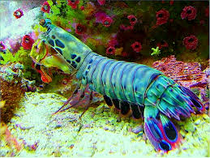

What??
About
The stomatopoda, or mantis shrimps, or Odontodactylus scyllarus, are marine crustaceas. The stomatopoda tipically grow around 22 cm (9 in) in length. The largest ever caught had a length of 46 cm (18 in). 
- Kingdom: Animalia
- Phylum: Arthropoda
- Subphylum: Crustacea
- Class: Malacostraca
- Order: Stomatopoda
- Odontodactylidae
- Genus: Odontodactylus
- Species: Odontodactylus scyllarus
Colorful
This animal has a better vision than the butterfly, because this marvelous creature has 60 differents colors. better than read it is see it!

THE PUSH!!!
Although the beauty, the mantis shrimp is an undersea nightmare. I will explain better with comics